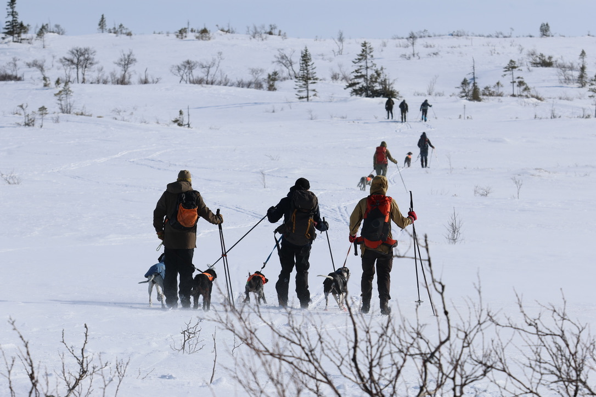
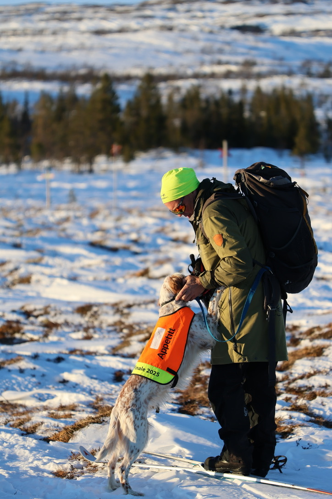

Slik fungerer det
Fra påmelding til ferdig kritikk. Vi gjør det enkelt for både arrangører og deltakere.

Påmelding via fuglehundprove.no eller importer deltakerliste fra NKK/Dogweb arra.
Trekk partier automatisk. Alle deltakere får beskjed på SMS når partilistene er klare. Automatisert opprykk fra venteliste ved tildelt plass er mulig.
Dommeren(e) fyller ut digitalt, eller leser inn med stemmen. NKK-rep signerer digitalt og alt lagres digitalt.
Ingen flere PDF-filer på Facebook. En enkel lenke hvor alle kan gå inn og se partilistene. Oppdateres i sanntid om de endres.
Automatisk utfylling av prøvemappe til NKK og rapport til FKF.
Nå er det slutt på papir! Kritikkene sendes over i ønsket filformat til raseklubbene.

Meld forfall med en enkel SMS. Aldri har det vært enklere!
Få beskjed når partiet er klart, ved endringer eller opprykk.
Kritikker og premier samlet. Følg utviklingen over tid.
Registrer hundene dine og se historikk fra alle prøver.
Snakk inn kritikken med stemmen. AI transkriberer automatisk til tekst. Ingen skriving i felt!
Designet for bruk i felt. Store knapper, enkel navigering og fungerer offline.
Hundeinfo, førerinfo og partidata er allerede på plass. Du fyller bare inn vurderingen.
Ingen etterarbeid med å skrive rent. Kritikkene er klare til signering med én gang.
Opprett en bruker gratis og meld deg på din første prøve i dag.